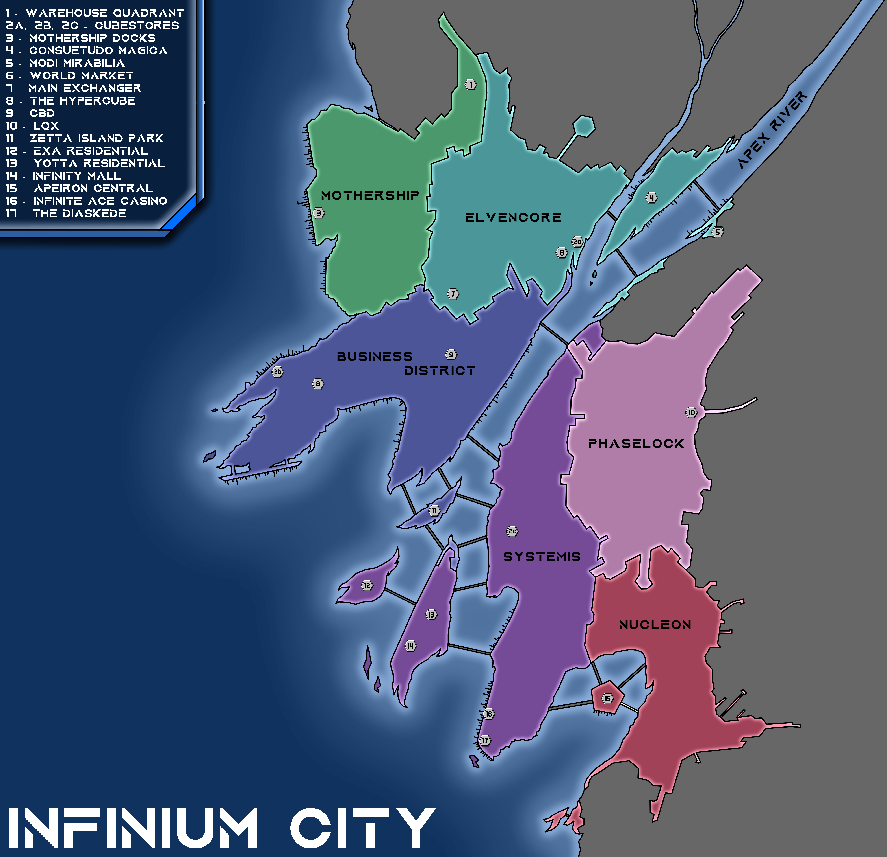

As Apeiron's richest city by far, and a close second to Starcaller Prime in terms of population thanks to its 27.1 million inhabitants, Infinium City (Planetary name: Infinimi Tek-nyrvari, "the Infinium Technopolis") is a sprawling megacity lying on the west coast of Apeiron, located around a majestuous fjord which doubles as the estuary of a waterway known as the Apex River. It is known all around the world as a city of luxury and joie de vivre, where your wildest dreams can come true... if you have the funds to make it so.
This page will cover the history of the city's different districts along with their most famous landmarks. You can find a complete list of all the city's major landmarks here.
City Map
The Business District
Being Infinium City's historical center, the Business District is also the region where most of the city's corporations, most notably Aurasphere Corp. and Rosa Infra WLLC, have their headquarters. As three quarters of the district were built two centuries ago, most of the district kept a rather old-school aesthetics typical of the first century PC, where comfort and efficiency are clumsily but spectacularly mixed together. The predominant building materials are glass and neo-concretes, and most towers are lined with neon lights and covered in advertisements. A mathematical study of a statistical model of the district evaluated that during a trip from the west to the east of the district, a single person will stumble upon an average of 18,540 advertisements.
The west of the district, colloquially known as the Hypercube, is globally lighter in terms of tall towers, and is more focused on residential areas and leisure establishments. The area's most famous attraction is Polytope Plaza, a vast esplanade and major tourist attraction, as the iconic, otherworldly appearance of the statue residing at its center - a carbon fiber statue of a 5-dimensional hypercube, projected in a 3D world - has become a symbol of the city known all around the world. In Infinium City, most people will still consider you a kid if you have never witnessed the Hypercube with your own eyes.
Systemis
Infinium City's main residential area is the result of Terminal Two's frantic expansion during Terminal One's reconstruction. The historical center of the district is known today as the Node, and to this day is the most densely populated area of the city, and the second-richest one, second only to Yotta Island's residential complex. By the end of the first century PC, the sudden increase in demands for rentals in the region made the city decide to milk this rush by progressively raising residence taxes; with time, this made the central areas of Systemis among the most expensive places to live on the entire planet. Nowadays, renting a penthouse on the east coast of Yotta Island can cost up to fifteen million Infiar a year, in exchange for living in the only place within Infinium which offers a direct vista of both the sea and Mount Canopée.
Systemis's northern areas are a whole different world. As security in the sourthern regions of the district was increased due to the constant influx of rich residents, the northern areas were almost abandoned, letting it turn into a hive of crime. The increase in crime rates led the city to train ever-better police forces, to counter a criminality which would ceaselessly increase in violence to fight the law. Infinium City was on the edge of civil war when the VMS showed up to put things back on an even keel. They managed to keep silent order in the district... at least until cybertech became widely available on the public market, allowing criminals to retaliate with even weapons. To this day, this war between gangs and the AZN is still going on, although it is so frequent to hear of massacres, AZN interventions and terrorist attacks within Northern Systemis that nobody cares anymore.
Elvencore
Contrasting starkly with the Business District's money machines and Systemis's popular neighborhood, Elvencore is the city's ethnic enclave, a colorful blend of different cultures, feeling very disconnected from the rest of the city through its much more lively mood. The district had been around since the foundation of Terminal One, as many people from exotic origins and with a taste for natural environments sought to settle a bit aside from the city to live a chill life near nature. Eventually, this camp turned into a small permament city, which later on merged with the sprawling Infinium City. The original city still stands to this day, and now hosts what is known as the World Market, a permament marketplace where are offered all sorts of artisanal, natural products and street foods from all cultures, origins, sizes and shapes.
A mostly residential region, although not as savage as Systemis, the district's architecture has been strongly molded by various cultures all around the world and from all ages; the district has often been said to be what would the antiquity's civilizations look like five millenia later. Some areas of the district have gone even further in purely and simply rejecting modernity. The most famous of them is known as the Consuetudo Magica; located in the district's easternmost regions, it is the residence of the people of the city who strive to get rid of technology and adopt an ancient, purely magic-based lifestyle. Most of the area's residents know how to wield magic; it is the right place to go if you are looking for an experienced arcanist.
Mothership
The district of Mothership has developed quite late. Although its coastline had been used for two centuries as ports for the city's intensive import-export business, the district really began growing inwards by the beginning of the 4th century PC, as the AZN needed a place to settle their local garrison. The district is a primarily commercial area, where streets are lined with alternating warehouses, office buildings, and the occasional residential buildings. Very few skyscrapers can be found here, and it is not a very popular area for living, although it is very inexpensive, and as such it is a relatively poor district. It does not have any particularly notable landmarks, whch contributes to its reputation of no man's land.
Phaselock
Infinium City's primary industrial powerhouse sprouted very early in Infinium City's history, as the various industries of Terminal One and Two were all gathered in a small industrial village away from the two cities, to keep the industry's poisons far from the public. The district's shady and almost dead avenues quickly became a select location for crime, slowly corrupting the whole district into a buzzing hive of lawlessness. This changed when the VMS settled in the city and wiped the district of all criminality within a few weeks, turning it into one of the city's safest places and allowing for corporations to set up their most sensitive facilities and research centers in the region. Backed up by the AZN constantly ensuring the area's security, Phaselock would probably be, ironically, the best place to live in within the entirety of Apeiron... if you do not mind dying of lung cancer in your mid-30's.
Contributing to its very industrial vibe, the district's architecture shows itself more practical than anything, giving the whole region an eerie, barren feel. Lighting is usually very powerful and aggressive, designed to pierce through the thickest industrial smogs. Streets are wide and empty, endlessly lined with warehouses, factories, loading bays and office buildings; this made the district a popular spot for street racers to organize their competitions. The district is most famous for being a place of scientific research, and it is riddled with deserted facilities and factories, abandoned in a rush after a critical industrial incident. Among the district's most famous features can be quoted the LQX, the city's most famous laboratory of quantum research, and the dream job of innumerable future scientists.
Nucleon
Nucleon is a very new district, but already one of the most popular ones. It is essentially the city's rich suburb, a relatively calm residential area where towers have not grown as frantically as in Systemis, and where crime rates are kept exceptionally low thanks to very high costs of living keeping away underprivileged people. It has a relatively cozy vibe, with wide streets, short buildings lined with ornamental neons of all colors, and is also one of the city's greenest areas thanks to its numerous squares and patches of nature. Its architecture is extremely modern, as most of the district was built less than 50 years ago.
The district notably houses the Apeiron Central, the Federation's largest maglev station. Built on a large artificial platform in the middle of Nucleon's bay, the station doubles as an airport, a subway exchanger, and a small hotel district for travelers.